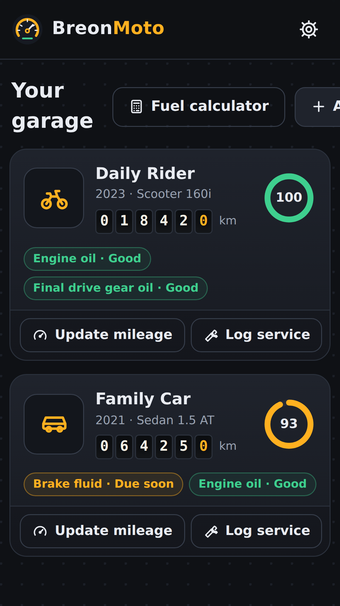
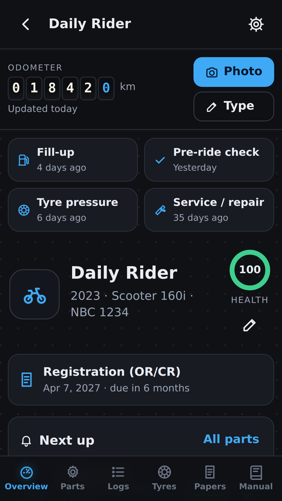
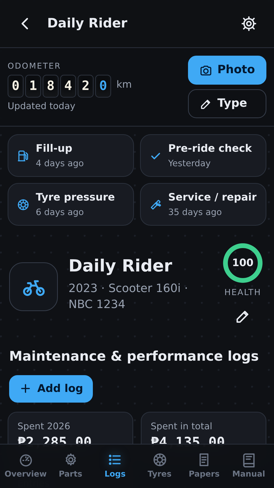
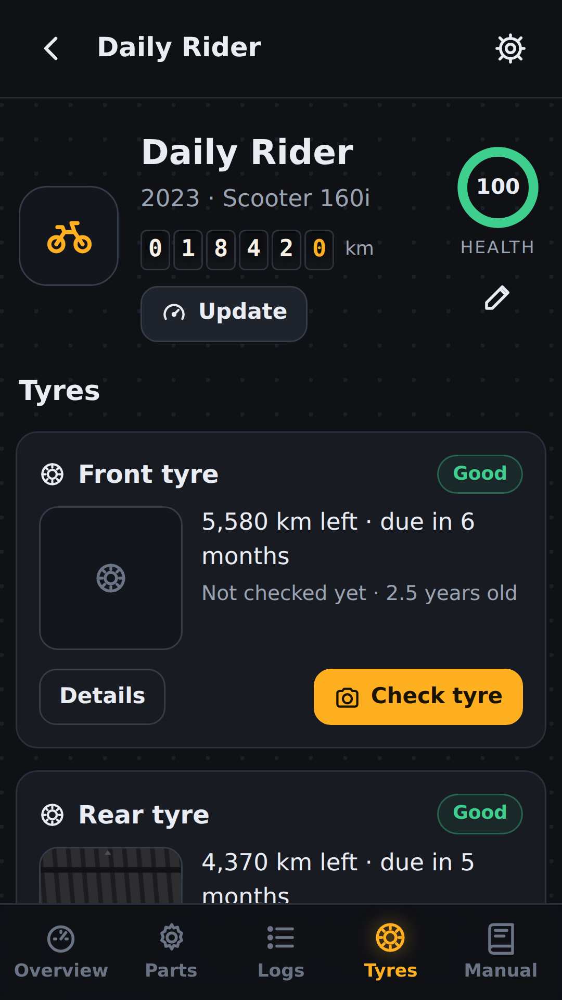
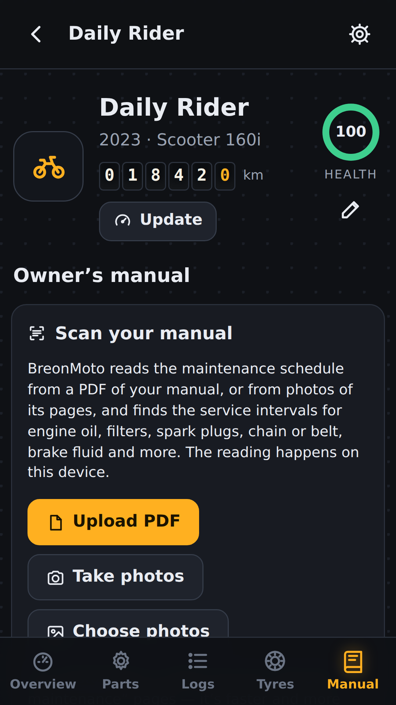

From your first vehicle to fuel receipt scanning, Google Drive sync and service reminders, find straightforward step-by-step help.
Choose your language
Jump to a section
BreonMoto is your digital workshop: it keeps your vehicle’s service history and tells you what is due next — oil, parts, tyres and papers. Everything stays on your phone or tablet.
1. Add your vehicle
Tap Add your first vehicle (or Add vehicle in the garage).
Choose the type (scooter, motorcycle, car, SUV, van), then start typing the make and model — pick from the list or type your own.
Enter the current odometer reading, the engine oil you use and how the vehicle is used. Choose Severe for heavy traffic, short trips, dust, heat, delivery or ride-hailing.
If you know your last oil change, enter its date and odometer. Tap Add to garage. BreonMoto sets up the usual parts for that type of vehicle.

Garage dashboard preview in BreonMoto
2. Keep the mileage up to date
The odometer is always at the top of your vehicle’s screen, on every tab. Tap Type and enter today’s reading. Do it about once a week — when it’s more than 7 days old the date turns amber and BreonMoto reminds you.
Faster: tap Photo and take a picture of the odometer. BreonMoto reads the numbers on your phone and fills them in. Zoom in with the camera (two fingers, or the 2× button) or hold the phone close, straight on and without glare — the numbers should fill about a third of the photo. Zoomed, close photos read best; far or wide photos are much harder to read. Check the number before you save. If it picked the wrong number (for example the speed or the trip meter), tap the odometer numbers on the photo and it reads just that part. The photo isn’t kept.
Under the odometer are the other things you update often: Fill-up, Pre-ride check, Tyre pressure and Service / repair, each showing when you last did it.
Only ride at weekends? When you add or edit a vehicle, type what you ride in a normal week (choose per week) — it’s used until BreonMoto has learned your real average. From your readings it learns how far you ride or drive per day, and turns “km left” into real dates.
Odometer broken or missing? Choose Broken or missing — estimate it when you add or edit the vehicle (or tap Odometer broken? on the mileage screen). Then tell BreonMoto either how many hours a day you ride or drive (it multiplies by a typical city speed, which you can change) or how far you go on the days you ride, plus how many days a week. The odometer then counts up by itself every day and the service dates keep working. It is only an estimate, so tap Adjust and type the real total whenever you know it, for example after a repair.
The odometer shown at the top is also a live estimate: between readings BreonMoto adds your average distance per day, so it stays close to the real number and service dates stay accurate. It says estimated today and shows your last real reading. Type or photograph a new reading any time and it replaces the estimate. You can switch this off in Settings, under Odometer.

Overview dashboard preview in BreonMoto
3. Engine oil
The Engine oil card shows how much of the oil’s life is used, the distance left and the due date.
Suggested uses a safe interval for your oil type (sources are shown). My interval lets you use the number from your manual, mechanic or oil brand.
After an oil change, tap Log oil change. The counter starts again.
On a car, the oil filter is the oil’s partner: it is replaced with every oil change, so the card is called Engine oil & filter and Log oil & filter change resets both. Ticking the engine oil in any log ticks the filter too, and Set last change moves both. If your mechanic changes the filter on its own schedule, open Oil filter in the Parts tab and untick Change it with every engine oil change.
Scooters have a second, separate oil: the Gear oil (rear final drive) in the small gearbox beside the rear wheel. It is not the engine oil. It is changed far less often (Honda says about every 2 years) and has its own part in the Parts tab.
Motorcycles with a manual gearbox have only one oil: the engine oil also lubricates the gearbox and the wet clutch, so there is no separate gear oil. Chain lube is a different product again — use one made for chains, not engine oil.
3b. Your model’s schedule and ride-hailing
For popular models sold in the Philippines, BreonMoto uses the maker’s own maintenance schedule from the official owner’s manual: Honda TMX125α, TMX Supremo, XRM125, Wave RSX, CB150X/CB150R, Click 125/125i, Click160, PCX160, ADV160, AirBlade160, BeAT, Genio and DIO, and Suzuki Raider R150 Fi and Smash 115. Choose the make and model from the list when you add the vehicle. Parts that follow it say Maker’s schedule for your model, with the manual edition and page.
Other models use general guidance until you scan your own manual in the Manual tab.
Ride-hailing or delivery, on the road most of the day? In Edit vehicle › How it’s used, choose Ride-hailing / delivery. Oil, oil and air filters and chain lubrication then come at half the distance (and half the time for oil), other wear parts at three quarters; brake fluid, coolant and batteries stay on their time limits. BreonMoto also asks for a new odometer reading every 2 days. This shortening is BreonMoto’s guidance for hard use, not the maker’s number, which is still shown.
4. Parts tracker
The Parts tab lists every part with a life bar: green = good, amber = due soon, red = replace now.
Tap a part to change its interval (distance and/or months), the date it was fitted, its condition, notes and warranty.
Tap the ✓ next to a part when you replace it. Use Add part for anything not on the list.
Each interval shows where it came from: general guide (with sources), your manual, or your own setting.
5. Logs, receipts and costs
Use Add log for oil changes, services, repairs, inspections, fuel-ups, performance notes and more.
Tick the parts you serviced so their counters reset. Add the cost, the shop or mechanic, and up to 4 photos of the receipt.
Running costs shows fuel and maintenance spending per month and the cost per km.

Service log preview in BreonMoto
6. Fuel and the fuel calculator
Log each fill-up with the litres and price per litre (the cost fills in by itself). Tick Filled the tank when you fill it up completely.
Scan receipt: in a fill-up, tap Scan receipt (or Receipt from gallery) and BreonMoto reads the litres, price per litre, amount, date and station from the receipt on your phone. It only trusts the numbers when litres × price equals the amount. Check them, then save. The photo is kept with the log.
Trip meter: like resetting the trip meter on your dashboard. Tap Trip meter before you leave, give the trip a name if you like (Work, Tagaytay) and check the odometer. When you arrive, tap it again and type the odometer, or what your trip meter shows. Each trip is counted on the fuel of your last fill-up, so the Fuel log shows e.g. “3 trips · 192 km · 29.2 km/L” for one fill-up. Economy per fill-up = distance driven on that fuel ÷ litres bought (the distance comes from the odometer at the next fill-up, or from your trips). It works best if you fill up the same way each time, for example always full, or always about the same amount when the gauge is low.
Economy is how far the vehicle goes on one litre (km per litre). You don’t type it: BreonMoto works it out by itself from your fill-ups — exactly from full tank to full tank, or roughly from any fill-ups with the odometer. With no fill-ups yet it uses a typical figure for that kind of vehicle (about 40 km/L for a scooter, 13 km/L for a car). Tap Change only if you want to try another figure. Opened from the garage, choose the vehicle at the top of the calculator.
The Fuel calculator opens on My fuel use, and there is nothing to type: it is worked out from your fill-up logs. For each stretch between two fill-ups it shows the odometer, the distance driven, the litres that filled the tank back up and the km per litre (distance ÷ litres). It also shows your average economy, the fuel cost per km, and gas each month: litres and pesos for this month so far, the average month, and a table of the last months. If the number looks too good to be true, a fill-up is probably missing from the log or an odometer reading is wrong, and BreonMoto tells you so.
Trip planner: in the fuel calculator, open the Trip planner tab and tap Open Google Maps. It starts from where you are now; choose your destination in Google Maps (or type it in BreonMoto first). Google shows the route and the arrival time with live traffic. Type the distance Google shows (tick Round trip if you are coming back) and BreonMoto works out the fuel and cost from your own fuel economy. BreonMoto passes only the destination you typed, if any, and only when you tap the button.
7. Tyres and tyre pressure
In Tyres, tap Check tyre: take a photo of the tread for your records, enter the tread depth (or how close the wear bars are), the 4-digit DOT date code and any damage. BreonMoto tells you when to replace the tyre.
Set the recommended pressure once (from the sticker or manual), then Log pressure every month with cold tyres. Low or high pressure is flagged.

Tyres dashboard preview in BreonMoto
8. Papers and LTO renewal
In Papers, tap Edit and enter the plate number. BreonMoto works out your LTO renewal week: the last digit is the month (1 = January … 0 = October) and the second-to-last digit is the week.
Brand new? Tick Brand new — the first registration lasts 3 years. If your OR/CR shows a different date, enter it under “registered until”.
Add your insurance (CTPL) expiry and your driver’s licence expiry. Tap Mark renewed after renewing — the next date moves to next year.
You will be reminded 30 days before (time for the emission test and CTPL) and again 7 days before.
9. Pre-ride check
On the Overview, tap Pre-ride check. Go through tyres, controls, lights, oil and fluids, chain and chassis, and stands — OK or Problem — and save. The check is kept in your logs with the date.
10. Scan your owner’s manual
In Manual, upload the PDF of your manual or take photos of the maintenance-schedule pages.
BreonMoto reads the text on your device (AI text recognition) and lists the intervals it found, with the page and the quoted line. Check each number, untick anything wrong, then save. Your parts then use the manual’s numbers.
You can also search the manual text, for example “tyre pressure” or “oil capacity”.

Manual scanning screen preview in BreonMoto
11. Notifications on your phone and tablet
Go to Settings › Reminders and turn on Remind me before maintenance is due. Allow notifications when Android asks. Tap Send a test notification to check.
You get reminders for every part, LTO registration, insurance, emission test, your driver’s licence, warranty, monthly tyre pressure and a weekly mileage reminder — all free.
Using BreonMoto on both a phone and a tablet? Install it on each and turn reminders on in each. To copy your records, use Backup file on one device and Restore backup on the other (Pro).
If notifications don’t arrive, check Android Settings › Apps › BreonMoto › Notifications, and set Battery to “Unrestricted”.
12. Home-screen widget
Long-press an empty spot on your home screen › Widgets › BreonMoto, and drag it to your home screen. It shows the next three items due across your vehicles. Tap it to open the app.
13. Reports, PDF and backup
Service history (PDF) makes a clean record of your vehicle — parts, papers, every service with costs and the receipt photos — to share with a buyer.
Also: a service-report image, logs as CSV, and a full backup file you can restore later or on a new device.
Phone and tablet (Android): Settings › Sync with your other devices › Sign in with Google. Do the same on the other device with the same Google account and your vehicles, logs and photos appear there. After that it syncs by itself when you open the app and shortly after you save. The copy is kept in a hidden BreonMoto folder in your own Google Drive; BreonMoto has no server. If you change the same thing on both devices before they sync, the device you are using wins. Delete from Google Drive removes the copy; your devices keep their data.
14. Free, with one small ad
BreonMoto is free and every feature is open to everyone: any number of cars and motorcycles, logs, fuel tools, the trip planner, parts tracker, predictions, odometer photo, reminders, papers, pre-ride check, manual scan, tyre check, PDF history, export and backup, sync and the widget.
The Google Play app shows one small banner ad at the bottom of the garage and vehicle screens. It never covers a form, a dialog or the keyboard, and it never pops up or plays sound. To remove it, tap No ads at the top (or Settings › Ads). It is a one-time payment — pay once, keep it for life. Use Restore purchase after reinstalling. In some countries Google asks for your choice about ads; you can change it in Settings › Ad privacy choices.
15. Language
Settings › Units › Language: choose English or Filipino (Tagalog).
Good to know
Suggestions are general guidance with sources; your owner’s manual and your mechanic come first. Always inspect your vehicle before you ride or drive.
Your data stays on your device. Uninstalling the app deletes it — keep a backup.
Something wrong? Settings › Report a problem.
Ang BreonMoto ang digital na talyer mo: itinatala nito ang serbisyo ng sasakyan mo at sinasabi kung ano ang susunod na dapat gawin — langis, piyesa, gulong at papeles. Nasa phone o tablet mo lang ang lahat ng data.
1. Idagdag ang sasakyan mo
Pindutin ang Idagdag ang una mong sasakyan (o Magdagdag ng sasakyan sa garahe).
Piliin ang uri (scooter, motorsiklo, kotse, SUV, van), at simulang i-type ang brand at modelo — pumili sa listahan o i-type ang sarili mo.
Ilagay ang kasalukuyang odometer, ang langis na ginagamit mo at kung paano ginagamit ang sasakyan. Piliin ang Severe kung madalas sa traffic, maiikling biyahe, maalikabok, mainit, delivery o ride-hailing.
Kung alam mo ang huling oil change, ilagay ang petsa at odometer. Pindutin ang Idagdag sa garahe. Maglalagay ang BreonMoto ng karaniwang piyesa para sa ganitong sasakyan.
Halimbawa ng Garage dashboard sa BreonMoto
2. Laging i-update ang mileage
Laging nasa itaas ng screen ng sasakyan mo ang odometer, sa bawat tab. Pindutin ang I-type at ilagay ang reading ngayon. Gawin ito mga isang beses kada linggo — kapag lampas 7 araw na, nagiging dilaw ang petsa at paalalahanan ka ng BreonMoto.
Mas mabilis: pindutin ang Litrato at kunan ang odometer. Babasahin ng BreonMoto ang mga numero sa phone mo at ilalagay ito. I-zoom ang camera (dalawang daliri, o ang 2× na button) o lumapit, at kunan nang diretso at walang silaw — dapat mga isang-katlo ng litrato ang laki ng mga numero. Pinakamadaling basahin ang naka-zoom at malapit na litrato; mas mahirap ang malayo o malapad. Tingnan muna ang numero bago i-save. Kung maling numero ang nakuha (halimbawa ang bilis o ang trip meter), pindutin ang mga numero ng odometer sa litrato at iyon lang ang babasahin. Hindi itinatago ang litrato.
Sa ilalim ng odometer ang iba pang madalas i-update: Karga ng gas, Pre-ride check, Hangin ng gulong at Serbisyo / ayos, kasama kung kailan mo huling ginawa.
Weekend rider lang? Kapag nagdagdag o nag-edit ng sasakyan, ilagay kung gaano kalayo ang biyahe mo sa karaniwang linggo (piliin ang linggo) — gagamitin ito hanggang matutunan ng BreonMoto ang tunay mong average. Mula sa mga reading, natututunan nito kung ilang km ang biyahe mo kada araw, at ginagawang petsa ang “km na natitira”.
Sira o wala ang odometer? Piliin ang Sira o wala — tantiyahin kapag nagdagdag o nag-edit ng sasakyan (o pindutin ang Sira ang odometer? sa mileage screen). Sabihin kung ilang oras kada araw ka bumibiyahe (i-multiply ito sa karaniwang bilis sa siyudad na puwede mong baguhin) o kung gaano kalayo sa mga araw na bumibiyahe ka, at ilang araw kada linggo. Kusang tataas ang odometer araw-araw at gagana pa rin ang mga petsa ng serbisyo. Tantiya lang ito, kaya pindutin ang Ayusin at ilagay ang tunay na bilang kapag alam mo na, halimbawa pagkatapos ng ayos.
Ang odometer sa itaas ay live na tantiya rin: sa pagitan ng mga reading, idinadagdag ng BreonMoto ang karaniwan mong layo kada araw, kaya malapit ito sa totoong numero at tama ang petsa ng service. Nakasulat ang estimated today at makikita ang huling totoong reading mo. Mag-type o kumuha ng bagong reading anumang oras at papalitan nito ang tantiya. Puwede itong patayin sa Settings, sa ilalim ng Odometer.
Halimbawa ng Overview dashboard sa BreonMoto
3. Langis ng makina
Ipinapakita ng card na Langis ng makina kung gaano na kagamit ang langis, ang natitirang distansya at ang petsa ng susunod na palit.
Rekomendado: ligtas na interval para sa uri ng langis mo (may pinagkunan). Sariling interval: gamitin ang numero mula sa manwal, mekaniko o brand ng langis.
Pagkatapos mag-oil change, pindutin ang Itala ang oil change. Magsisimula ulit ang bilang.
Sa kotse, kapartner ng langis ang oil filter: pinapalitan ito sa bawat oil change, kaya Langis ng makina at filter ang tawag sa card at nire-reset ng Itala ang palit ng langis at filter ang dalawa. Kapag tsinek mo ang langis ng makina sa kahit anong tala, matsetsek din ang filter, at inililipat ng Itakda ang huling palit ang dalawa. Kung may sariling iskedyul ang filter ayon sa mekaniko mo, buksan ang Oil filter sa tab na Piyesa at alisin ang tsek sa Palitan kasabay ng bawat oil change.
May pangalawa at hiwalay na langis ang mga scooter: ang Gear oil (sa likod, final drive) sa maliit na gearbox sa tabi ng likurang gulong. Hindi ito ang langis ng makina. Mas bihira itong palitan (mga bawat 2 taon ayon sa Honda) at may sarili itong piyesa sa tab na Piyesa.
Ang mga motor na may manual na gearbox ay may isang langis lang: ang langis ng makina ay nagpapadulas din sa gearbox at wet clutch, kaya walang hiwalay na gear oil. Magkaiba pa rin ang chain lube — gumamit ng para sa kadena, hindi langis ng makina.
3b. Iskedyul ng modelo mo at ride-hailing
Para sa mga sikat na modelo sa Pilipinas, ginagamit ng BreonMoto ang sariling maintenance schedule ng gumawa mula sa opisyal na owner’s manual: Honda TMX125α, TMX Supremo, XRM125, Wave RSX, CB150X/CB150R, Click 125/125i, Click160, PCX160, ADV160, AirBlade160, BeAT, Genio at DIO, at Suzuki Raider R150 Fi at Smash 115. Piliin ang make at model sa listahan kapag nagdagdag ng sasakyan. Ang mga piyesang sumusunod dito ay may Iskedyul ng gumawa para sa modelo mo, kasama ang edisyon at pahina ng manwal.
Pangkalahatang gabay ang gamit ng ibang modelo hanggang i-scan mo ang sarili mong manwal sa tab na Manwal.
Ride-hailing o delivery, halos buong araw sa daan? Sa I-edit ang sasakyan › Paano ginagamit, piliin ang Ride-hailing / delivery. Ang langis, oil at air filter at pag-lube ng kadena ay nasa kalahati ng distansya (at kalahati ng oras para sa langis), ang ibang piyesang napupudpod ay nasa tatlong-kapat; nananatili sa oras ang brake fluid, coolant at baterya. Hihingi rin ang BreonMoto ng bagong odometer reading kada 2 araw. Gabay ito ng BreonMoto para sa mabigat na gamit, hindi numero ng gumawa, na ipinapakita pa rin.
4. Talaan ng piyesa
Sa tab na Piyesa, may bar ang bawat piyesa: berde = maayos, dilaw = malapit na, pula = palitan na.
Pindutin ang piyesa para baguhin ang interval (distansya at/o buwan), petsa ng pagkakabit, kondisyon, tala at warranty.
Pindutin ang ✓ kapag pinalitan mo na ang piyesa. Gamitin ang Magdagdag ng piyesa para sa iba pa.
Nakasulat kung saan galing ang bawat interval: pangkalahatang gabay (may pinagkunan), manwal mo, o sarili mong setting.
5. Talaan, resibo at gastos
Gamitin ang Magdagdag ng tala para sa oil change, serbisyo, pagkumpuni, inspeksyon, pagkarga ng gas, performance at iba pa.
I-tsek ang mga piyesang sineserbisyo para mag-reset ang bilang. Ilagay ang gastos, ang talyer o mekaniko, at hanggang 4 na litrato ng resibo.
Sa Gastos sa pagpapatakbo makikita ang gastos sa gas at maintenance kada buwan at ang gastos kada km.
Halimbawa ng Service log sa BreonMoto
6. Gasolina at fuel calculator
Itala ang bawat pagkarga: litro at presyo kada litro (kusang lalabas ang gastos). I-tsek ang Pinuno ang tangke kapag full tank.
Scan receipt: sa pagkarga, pindutin ang Scan receipt (o Receipt from gallery) at babasahin ng BreonMoto ang litro, presyo kada litro, halaga, petsa at gasolinahan mula sa resibo, sa phone mo mismo. Pinagkakatiwalaan lang nito ang mga numero kapag litro × presyo = halaga. Suriin muna bago i-save. Nakatabi ang litrato sa log.
Trip meter: parang pag-reset ng trip meter sa dashboard. Pindutin ang Trip meter bago umalis, lagyan ng pangalan kung gusto mo (Trabaho, Tagaytay) at tingnan ang odometer. Pagdating, pindutin ulit at i-type ang odometer, o ang nakalagay sa trip meter mo. Binibilang ang bawat biyahe sa gasolina ng huling pagkarga mo, kaya ipinapakita ng Fuel log halimbawa “3 trips · 192 km · 29.2 km/L” sa isang pagkarga. Economy kada pagkarga = layong natakbo sa gasolinang iyon ÷ litrong binili. Pinakatama ito kung pareho ang paraan ng pagkarga mo bawat beses.
Ang Economy ay kung gaano kalayo ang naaabot ng sasakyan sa isang litro (km kada litro). Hindi mo ito ita-type: kusang kinakalkula ito ng BreonMoto mula sa mga pagkarga mo — eksakto mula full tank hanggang full tank, o tantiya mula sa anumang pagkarga na may odometer. Kung wala pang pagkarga, gumagamit ito ng karaniwang numero para sa ganitong sasakyan (mga 40 km/L sa scooter, 13 km/L sa kotse). Pindutin lang ang Change kung gusto mong sumubok ng ibang numero. Kung binuksan mula sa garahe, piliin ang sasakyan sa itaas ng calculator.
Bumubukas ang Fuel calculator sa My fuel use at wala kang kailangang i-type: kusa itong kinakalkula mula sa mga talaan mo ng pagkarga. Para sa bawat pagitan ng dalawang pagkarga, makikita ang odometer, ang layo ng nilakbay, ang litrong pumuno ulit sa tangke at ang km kada litro (layo ÷ litro). Makikita rin ang average na konsumo, gastos sa gas kada km, at ang gas kada buwan: litro at piso ngayong buwan, ang karaniwang buwan, at talaan ng mga nakaraang buwan. Kung masyadong maganda ang numero, malamang may kulang na pagkarga sa talaan o mali ang odometer, at sasabihin iyon ng BreonMoto.
Trip planner: sa fuel calculator, buksan ang tab na Trip planner at pindutin ang Buksan ang Google Maps. Magsisimula ito sa kinaroroonan mo ngayon; piliin ang destinasyon sa Google Maps (o i-type muna sa BreonMoto). Ipapakita ng Google ang ruta at oras ng pagdating na may live na trapiko. I-type ang layong ipinakita ng Google (lagyan ng tsek ang Round trip kung babalik ka) at kakalkulahin ng BreonMoto ang gasolina at gastos mula sa sarili mong fuel economy. Ang destinasyong tina-type mo lang (kung mayroon) ang ipinapasa ng BreonMoto, at kapag pinindot mo lang ang button.
7. Gulong at hangin ng gulong
Sa Gulong, pindutin ang I-check ang gulong: kunan ng litrato ang tread para sa record, ilagay ang lalim ng tread (o gaano kalapit ang wear bars), ang 4-digit na DOT code at anumang sira. Sasabihin ng BreonMoto kung kailan dapat palitan ang gulong.
Itakda nang isang beses ang rekomendadong hangin (mula sa sticker o manwal), tapos Itala ang hangin buwan-buwan habang malamig ang gulong. Mamarkahan kung kulang o sobra ang hangin.
Halimbawa ng Tyres dashboard sa BreonMoto
8. Papeles at LTO renewal
Sa Papeles, pindutin ang I-edit at ilagay ang plaka. Kinukuwenta ng BreonMoto ang linggo ng LTO renewal mo: ang huling numero ang buwan (1 = Enero … 0 = Oktubre) at ang ikalawa sa huli ang linggo.
Brand new? I-tsek ang Brand new — 3 taon ang bisa ng unang rehistro. Kung iba ang petsa sa OR/CR mo, ilagay ito sa “registered until”.
Ilagay ang expiry ng insurance (CTPL) at ng lisensya mo. Pindutin ang Markahang na-renew pagkatapos mag-renew — lilipat sa susunod na taon ang petsa.
Paalalahanan ka 30 araw bago (para sa emission test at CTPL) at 7 araw bago ang takdang petsa.
9. Pre-ride check
Sa Buod, pindutin ang Pre-ride check. Tingnan ang gulong, kontrol, ilaw, langis at fluids, kadena at chassis, at stand — OK o May problema — at i-save. Nakatala ito sa talaan kasama ang petsa.
10. I-scan ang manwal
Sa Manwal, i-upload ang PDF ng manwal o kunan ng litrato ang mga pahina ng maintenance schedule.
Binabasa ng BreonMoto ang teksto sa device mo (AI text recognition) at inililista ang mga interval na nakita, kasama ang pahina at ang mismong linya. Suriin ang bawat numero, alisin ang tsek sa mali, at i-save. Gagamitin na ng mga piyesa ang numero mula sa manwal.
Puwede ring maghanap sa teksto ng manwal, halimbawa “tyre pressure” o “oil capacity”.
Halimbawa ng Manual scanning screen sa BreonMoto
11. Mga notification sa phone at tablet
Pumunta sa Settings › Mga paalala at i-on ang Paalalahanan ako bago ang maintenance. Payagan ang notifications kapag nagtanong ang Android. Pindutin ang Magpadala ng test notification para masubukan.
May paalala para sa bawat piyesa, LTO registration, insurance, emission test, lisensya, warranty, buwanang hangin ng gulong at lingguhang paalala sa mileage — lahat libre.
Gamit sa phone at tablet? I-install sa bawat isa at i-on ang paalala sa bawat isa. Para kopyahin ang records, gamitin ang Backup file sa isa at I-restore ang backup sa kabila (Pro).
Kung walang dumarating na notification, tingnan ang Android Settings › Apps › BreonMoto › Notifications, at gawing “Unrestricted” ang Battery.
12. Widget sa home screen
Pindutin nang matagal ang bakanteng bahagi ng home screen › Widgets › BreonMoto, at i-drag sa home screen. Ipinapakita nito ang susunod na tatlong dapat gawin sa lahat ng sasakyan mo. Pindutin ito para buksan ang app.
13. Report, PDF at backup
Ang Service history (PDF) ay malinis na record ng sasakyan — piyesa, papeles, bawat serbisyo at gastos, at litrato ng resibo — na maipapakita sa buyer.
Mayroon ding service-report na larawan, talaan bilang CSV, at buong backup file na mare-restore mo sa ibang device.
Phone at tablet (Android): Settings › Sync with your other devices › Sign in with Google. Gawin din sa kabilang device gamit ang parehong Google account at lalabas doon ang mga sasakyan, talaan at litrato mo. Pagkatapos, kusa na itong nagsi-sync kapag binuksan mo ang app at ilang sandali pagkatapos mag-save. Nakatago ang kopya sa isang BreonMoto folder sa sarili mong Google Drive; walang server ang BreonMoto. Kung binago mo ang parehong bagay sa dalawang device bago sila mag-sync, ang device na gamit mo ang masusunod. Tinatanggal ng Delete from Google Drive ang kopya; mananatili ang data sa mga device mo.
14. Libre, may isang maliit na ad
Ang BreonMoto ay libre at bukas ang lahat ng feature sa lahat: kahit ilang kotse at motor, talaan, fuel tools, trip planner, talaan ng piyesa, prediksyon, litrato ng odometer, paalala, papeles, pre-ride check, pag-scan ng manwal, tyre check, PDF history, export at backup, sync at ang widget.
Ang app sa Google Play ay may isang maliit na banner ad sa ibaba ng garahe at ng screen ng sasakyan. Hindi ito tumatakip sa form, dialog o keyboard, at hindi ito lumalabas bigla o may tunog. Para alisin, pindutin ang Walang ads sa itaas (o Settings › Ads). Isang bayad lang — bayaran nang isang beses, sa iyo habambuhay. Gamitin ang I-restore ang binili pagkatapos mag-reinstall. Sa ilang bansa, tinatanong ng Google ang pasya mo tungkol sa ads; mababago ito sa Settings › Mga pagpipilian sa privacy ng ads.
15. Wika
Settings › Mga yunit › Wika: piliin ang English o Filipino (Tagalog).
Dapat tandaan
Pangkalahatang gabay lang ang mga mungkahi at may nakalagay na pinagkunan; mas mauuna ang manwal at ang mekaniko mo. Laging suriin ang sasakyan bago bumiyahe.
Nasa device mo lang ang data. Mabubura ito kapag na-uninstall ang app — gumawa ng backup.